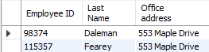
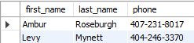
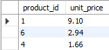
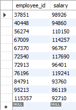

MySQL Practise - Piotr Lemancewicz
1. Retrieve First name and Last name of all employees.
USE sql_hr;
SELECT
concat(first_name,' ',last_name) AS 'Employee name'
FROM employees
ORDER BY first_name;
2. Retrieve id and last name of employees who draw a salary which is at least 70000 and who work in office in Minneapolis. Retrieve also office’s address.
USE sql_hr;
SELECT
e.employee_id AS 'Employee ID',
e.last_name AS 'Last Name',
o.address AS 'Office address'
FROM employees e
JOIN offices o
USING (office_id)
WHERE office_id = (
SELECT office_id
FROM offices
WHERE city = 'Minneapolis')
AND salary >= 70000;
3. Make aprioriate changes concerning situation: Employee with id 84791 no longer reports to anyone and all employees from office id 4 will from now on report to that employee with id 84791.
USE sql_hr;
UPDATE employees
SET
reports_to = NULL
WHERE employee_id = 84791;
UPDATE employees
SET
reports_to = 84791
WHERE reports_to IS NOT NULL AND office_id = 4;4. Retrieve the id of the invoice and a year in which it is due.
USE sql_invoicing;
SELECT
invoice_id,
YEAR(due_date)
FROM invoices;
5. Display first name, last name and phone number of customers who live in Atlanta or Nashville and have over 1000 points.
USE sql_store;
SELECT
first_name,
last_name,
phone,
city,
points
FROM customers
WHERE city IN ('Atlanta','Nashville')
AND points > 1000;
6. Display first name, last name and phone number of all customers whose phone number starts with 4.
USE sql_store;
SELECT
first_name,
last_name,
phone
FROM customers
WHERE phone LIKE '4%';
7. Retrieve first name and last name of customers whose address have word ‘center’ in it.
USE sql_store;
SELECT
first_name,
last_name
FROM customers
WHERE address LIKE '%center%';
8. Retrieve the id and birth date of customers who have been born betwen 1986 and 1992.
USE sql_store;
SELECT
customer_id,
birth_date
FROM customers
WHERE birth_date BETWEEN '1986-01-01' AND '1992-01-01';
9. Retrieve the id and birth date of customers who have NOT been born betwen 1986 and 1992 and are NOT from Nashville.
USE sql_store;
SELECT
customer_id,
birth_date
FROM customers
WHERE birth_date NOT BETWEEN '1986-01-01' AND '1992-01-01'
AND city <> 'Nashville';
10. Display id and unit prices of products from order with id = 2, sorted by their unit price in descending mode.
USE sql_store;
SELECT
product_id,
unit_price
FROM order_items
WHERE order_id = 2
ORDER BY unit_price DESC;
11. Display the average order value and total order value for each id of all orders.
USE sql_store;
SELECT
order_id,
SUM(quantity*unit_price) AS order_value
FROM order_items
GROUP BY order_id
ORDER BY order_value DESC;
SELECT
AVG (order_value) AS 'Average Order Value'
FROM (SELECT
order_id,
SUM(quantity*unit_price) AS order_value
FROM order_items
GROUP BY order_id
ORDER BY order_value DESC) AS X;
12. Indicate (in comments) that customers, who have more than 3000 points and ordered something, are Gold customers.
USE sql_store;
UPDATE orders
SET comments = 'Gold customer'
WHERE customer_id IN
(SELECT customer_id
FROM customers
WHERE points > 3000);13. Display addresses of those departments that has at least 3 employees.
USE sql_hr;
SELECT
e.office_id,
o.address AS 'office address',
COUNT(*) AS 'Number of employees'
FROM employees e
JOIN offices o
USING (office_id)
GROUP BY office_id
HAVING COUNT(*) >= 3;
14. Display orders before 2019-01-01 as Active and those after 2019-01-01 as Archived orders.
USE sql_store;
SELECT
order_id,
order_date,
'Active' AS status
FROM orders
WHERE order_date >= '2019-01-01'
UNION
SELECT
order_id,
order_date,
'Archived' AS status
FROM orders
WHERE order_date < '2019-01-01';
15. Display status of orders.
USE sql_store;
SELECT
o.order_id,
o.order_date,
c.first_name,
c.last_name,
os.name AS status
FROM orders o
JOIN customers c
ON o.customer_id = c.customer_id
JOIN order_statuses os
ON o.status = os.order_status_id
ORDER BY order_id;
16. Display id and salary of employees whose salary is more than the average salary of all of the employees.
USE sql_hr;
SELECT
employee_id,
salary
FROM employees
WHERE salary >= (SELECT AVG(salary) FROM employees);
17. Find the 2nd lowest salary in the employees table.
USE sql_hr;
SELECT
min(salary) AS '2nd lowest salary'
FROM employees
WHERE salary NOT IN (
SELECT
MIN(salary)
FROM employees);